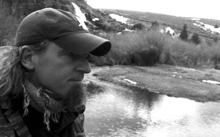
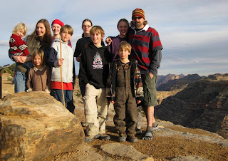
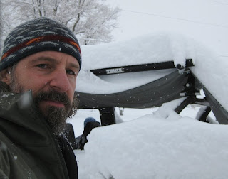

Recovered weblog entry
Birthday

Speaking in terms of days past, there were two brothers. 10 years separated them nearly to the month and day; the sign they shared of Pisces was a bond in both word and temperament.
The older brother was all the younger brother could ask for. Patient and kind, always willing to share time with him. On far too many occasions, the younger would find his way downstairs and into the older's room. He was never once dismissed. Instead, he was welcomed and encouraged to come back.
Once, the older brother gave the younger a quarter to use for a candy dispenser at Robintino's; the young brother did not forget this. The young brother hopes the older remembers the look on the hiss face. He hopes it contained gratitude.

Another time, he took the young brother with him to downtown Salt Lake. The young brother remembers this trip fondly, his older brother had a broken leg. They bought magic tricks at a shop at the Crossroads. The young brother was cold at the bus stop, so the older brother gave him his sweater. The young brother was warm, and knew his older brother was likely cold. But the older brother never let on. They also missed the bus.
Countless memories continue; using the older brother's paint, listening to his music, spending time in his room when he had no real business there. He remembers the Sunkist clock on the wall, the replica cars and models in his room. There were pencil drawings on the wall above the door. It smelled of incense and cologne.
The older brother baptized the younger, helped him feel encouraged when times were less than certain, and always made him feel like he was on to something big.

The younger brother remembers the swim meets, concerts (especially singing Goodnight Saigon...killer), football games, date nights, and family dinners. Big events and small, it shows that the young brother was always watching.
The younger brother remembers the Vespa. He remembers the trouble he caused when he brought it home, but remembers it only feeling like excitement. This was the vehicle that would carry his hero forth on his journeys. The younger brother pretended his bike was a Vespa. The younger brother pretended he was his older brother.
Sharing a close birthday, yet being separated by 10 years gave the young brother perspective. It allowed him to see into the future.
Happy birthday to an older brother who has always exemplified the role he was thrust into, the role that so many fail miserably at, that many are still trying to master. Happy birthday to the older brother that teaches his children to be the best siblings they can be, whether brothers or sisters, older or young.
Happy birthday to you, Adam.